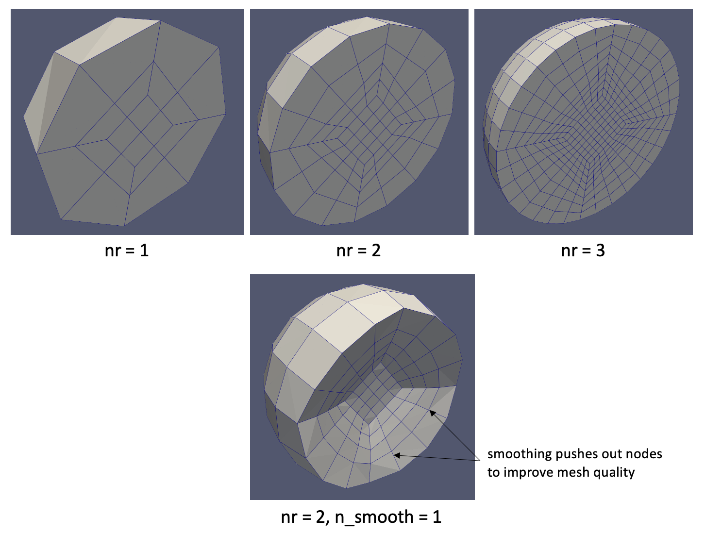

- nrNumber of refinements
C++ Type:unsigned int
Range:nr >= 0
Controllable:No
Description:Number of refinements
- radiusSphere (ball) radius
C++ Type:Real
Unit:(no unit assumed)
Range:radius > 0.0
Controllable:No
Description:Sphere (ball) radius
SphereMeshGenerator
Generate a sphere (ball) mesh centered on the origin
Overview
The SphereMeshGenerator creates a mesh of a sphere (a ball, not its boundary). The mesh refinement and smoothing parameters define the mesh density. Figure 1 depicts several sphere meshes (sliced in half to illustrate the interior elements) for different selections of refinement and smoothing parameters.

Figure 1: Sphere meshes created with different choices for refinement level and smoothing operations
The dimension of the generated mesh is determined by the selected elem_type. 3D element types will cause a ball volume to be meshed, 2D element types will cause a circular area (disk) to be meshed, and 1D element types will cause a line segment to be meshed.
Input Parameters
- elem_typeThe type of element to generate
C++ Type:MooseEnum
Controllable:No
Description:The type of element to generate
- n_smooth0Number of smoothing operations
Default:0
C++ Type:unsigned int
Controllable:No
Description:Number of smoothing operations
Optional Parameters
- enableTrueSet the enabled status of the MooseObject.
Default:True
C++ Type:bool
Controllable:No
Description:Set the enabled status of the MooseObject.
- save_with_nameKeep the mesh from this mesh generator in memory with the name specified
C++ Type:std::string
Controllable:No
Description:Keep the mesh from this mesh generator in memory with the name specified
Advanced Parameters
- nemesisFalseWhether or not to output the mesh file in the nemesisformat (only if output = true)
Default:False
C++ Type:bool
Controllable:No
Description:Whether or not to output the mesh file in the nemesisformat (only if output = true)
- outputFalseWhether or not to output the mesh file after generating the mesh
Default:False
C++ Type:bool
Controllable:No
Description:Whether or not to output the mesh file after generating the mesh
- show_infoFalseWhether or not to show mesh info after generating the mesh (bounding box, element types, sidesets, nodesets, subdomains, etc)
Default:False
C++ Type:bool
Controllable:No
Description:Whether or not to show mesh info after generating the mesh (bounding box, element types, sidesets, nodesets, subdomains, etc)